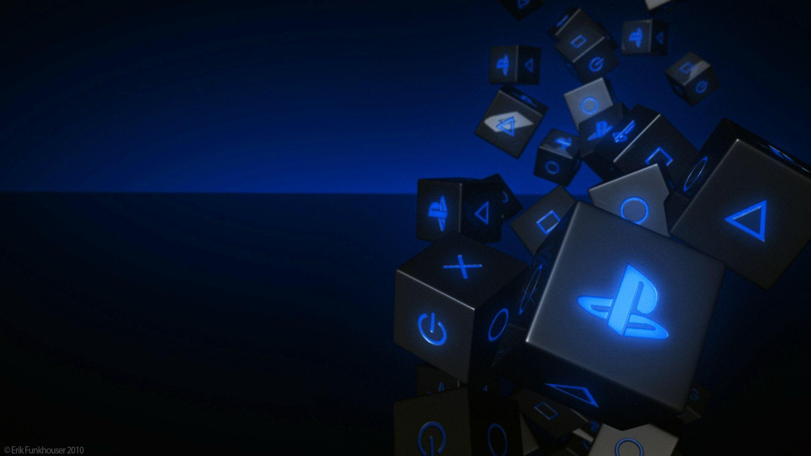

Witness Play
Unleashed™
또렷한 이미지 선명도, 높은 프레임 레이트로
즐기는 게임 플레이 등의 멋진 기능으로
게임 품질을 향상할 수 있습니다.

PlayStation 콘솔에서 가능한 가장 인상적인 비주얼로
PS5® 게임을 플레이하세요.
또렷한 이미지 선명도, 높은 프레임 레이트로
즐기는 게임 플레이 등의 멋진 기능으로
게임 품질을 향상할 수 있습니다.
PlayStation®
Spectral Super Resolution
AI로 향상된 해상도를 활용해 4K TV에서 아주 또렷한
이미지 선명도를 구현합니다. 놀라운 디테일을 보여주는
초고해상도 게임을 플레이 해보세요.
최적화된 콘솔 성능
60Hz 및 120Hz 디스플레이를 지원해 더 높고
일관된 프레임 레이트를 구현하는 매끄러운
게임 플레이를 경험할 수 있습니다.
고급 레이 트레이싱
눈부신 게임 세계를 탐험 하면서 레이 트레이싱
반사, 그림자 및 고품질 글로벌 조명으로 한 차원
높은 현실감을 경험해 보세요.
놀라운 그래픽과 부드러운 게임 플레이를 제공하는 사용자 지정 CPU, GPU 및 SSD의 기능을 활용하세요.
2TB 스토리지
2TB의 SSD 스토리지가 내장되어 있어 좋아하는 게임을 원할 때 언제든지 즐길 수 있습니다.
Wi-Fi 7 호환
Wi-Fi 7를 지원하는 PS5 Pro에서 호환되는 라우터를 통해 온라인 플레이 시 대기 시간이 줄어들고 안정성이 향상됩니다.
PS5 Pro
게임 부스트
가장 멋진 게임 중 일부에서 더 빠르고 부드러운 프레임 레이트로 플레이할 수 있습니다.
생생한 색상과
선명한 4K 그래픽
4K TV와 호환 PS5 게임이 있어 정교한 디테일을 생생하게 느껴볼 수 있습니다.
초고속 SSD
설치된 PS5 게임이 거의 즉시 로드되어 게임을 더 빠른 속도로 즐길 수 있습니다.
혁신적인 PS5 컨트롤러의 터치 감지 기능을 통해
더욱 몰입감 넘치는 게임 경험을 만끽하세요.
PlayStation이 선보이는 가장 인상적인 비주얼로 PS5 게임을 플레이하세요.
PS5 Pro용으로 향상된 게임에서 고급 레이 트레이싱, 4K TV의 뛰어난 선명도,
더 높은 프레임 속도를 경험해 보세요.